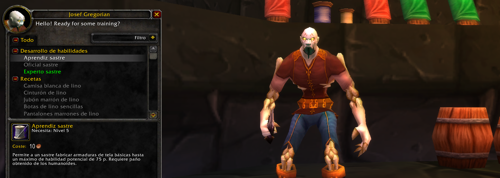
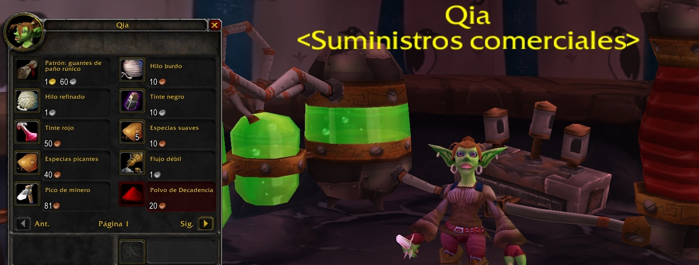

Guía de Sastrería 1 a 300
Los sastres pueden tejer maravillas a partir de una tela sencilla. Las armaduras de tela, túnicas, camisas, bolsas y otros productos son ámbito del sastre. Los beneficios son diversos: las clases que llevan armaduras ligeras pueden vestir túnicas místicas, todo tipo de héroes pueden disfrutar de una gran variedad de bolsas, y todo el mundo sabrá apreciar las camisas y prendas decorativas que surgen del telar del sastre.
La sastrería no depende de una profesión de recolección. Se puede encontrar tela en cofres o en enemigos muertos. También se puede comprar. En general, sastrería suele ir de la mano de una gran variedad de profesiones, aunque encantamiento es la más común.
La mayoría del trabajo de sastrería puede realizarse en cualquier parte, siempre y cuando tengas los materiales necesarios.

Como sucede con cualquier profesión, nuestra primera parada debe ser junto al instructor de sastrería (Orgrimmar, Ventormenta...) para que nos enseñe esta profesión primaria y el desarrollo de habilidad "Aprendiz sastre" que nos permitirá ponernos manos a la obra con esta profesión.
La presente guía la dividiremos en dos partes. La primera se centrará en detallaros los materiales necesarios para subir la profesión y la segunda, el método para llegar a los 300 puntos con sastrería.

Sastrería 1-75
Una vez hemos aprendido el rango "Aprendiz sastre" procederemos a realizar los siguientes objetos para subir la profesión a 75 puntos de habilidad.
- Madeja de paño de lino: hasta llegar a los 45 puntos de habilidad (70 unidades aproximadamente creadas).
- Camisa de lino roja: hasta llegar a los 65 puntos de habilidad (20 unidades creadas).
- Manteo de lino reforzado: hasta llegar a los 75 puntos de habilidad (10 unidades creadas).
Sastrería 75-145
En este punto, tendremos que visitar a nuestro instructor de sastrería para aprender el rango "oficial sastre". Como consejo, os recomendamos acudir a Magar en Orgrimmar (Horda) o Sellandus en Ventormenta (Alianza).
- Madeja de paño de lana: hasta llegar a los 105 puntos de habilidad (59 unidades aproximadamente creadas). Es importante remarcar que aunque tengamos algo de suerte y lleguemos a 105 puntos de habilidad antes, como mínimo tendremos que crear 55 unidades de Madeja de paño de lana para afrontar el desarrollo de los siguientes artículos de la guía.
- Camisa de lana gris: hasta llegar a los 110 puntos de habilidad (5 unidades creadas).
- Sobrehombros de lana con doble pespunte: hasta llegar a los 125 puntos de habilidad (15 unidades creadas).
- Madeja de paño de seda: hasta llegar a los 145 puntos de habilidad (realizaremos un total de 190 unidades ya que aunque lleguemos a los 145 puntos de sastrería, necesitaremos este material para afrontar el desarrollo de los siguientes artículos de la guía).
Sastrería 145-220
Antes de comenzar este apartado, tendremos que visitar a nuestro instructor de sastrería para aprender el rango "experto sastre". Como consejo, os recomendamos acudir a Josef Gregorian en Entrañas (Horda) o Georgio Bolero en Ventormenta (Alianza).
- Caperuza de seda azur: hasta llegar a los 160 puntos de habilidad (15 unidades aproximadamente creadas).
- Cinta de seda: hasta llegar a los 170 puntos de habilidad (10 unidades creadas).
- Camisa blanca formal: hasta llegar a los 175 puntos de habilidad (5 unidades creadas).
- Madeja de tejido mágico: hasta llegar a los 185 puntos de habilidad (realizaremos un total de 100 unidades ya que aunque lleguemos a los 185 puntos de sastrería, necesitaremos este material para afrontar el desarrollo de los siguientes artículos de la guía).
- Jubón de seda carmesí: hasta llegar a los 205 puntos de habilidad (20 unidades creadas).
- Bombachos de seda carmesíes: hasta llegar a los 215 puntos de habilidad (10 unidades creadas).
- Leotardos de tejido mágico negros: hasta llegar a los 220 puntos de habilidad (5 unidades creadas).

Sastrería 220-300
Para afrontar el último apartado, tendremos que visitar a nuestro instructor de sastrería para aprender el rango "sastre artesano". Como consejo, os recomendamos acudir a Daryl Stack en Molino Tarren, Laderas de Trabalomas (Horda) o Timoteo Valión en Theramore, Marjal Revolcafango (Alianza).
- Guantes de tejido mágico negros: hasta llegar a los 230 puntos de habilidad (10 unidades creadas).
- Cinta de tejido mágico negra: hasta llegar a los 250 puntos de habilidad (20 unidades creadas).
- Madeja de paño rúnico: hasta llegar a los 260 puntos de habilidad (realizaremos un total de 180 unidades ya que aunque lleguemos a los 260 puntos de sastrería, necesitaremos este material para afrontar el desarrollo de los siguientes artículos de la guía).
- Cinturón de paño rúnico: hasta llegar a los 275 puntos de habilidad (15 unidades aproximadamente creadas).
Llegados a los 275 puntos de habilidad, acudiremos a Vista Eterna (Cuna del Invierno) para comprarle a Qia el Patrón: guantes de paño rúnico (te aconsejamos también comprar Patrón: bolsa de paño rúnico). Una vez consigamos comprarlos (es posible que tengamos que esperar un tiempo ya que solo vende una unidad cada cierto tiempo), proseguiremos para finalizar nuestra profesión.
- Guantes de paño rúnico: hasta llegar a los 300 puntos de habilidad.
Es posible realizar también de 275 a 280 algunas Bolsa de paño rúnico para ahorrar algo de Cuero basto, pero os recomendamos directamente realizar los Guantes de paño rúnico ya que la Bolsa de paño rúnico puede fallar y no subirnos los puntos que necesitamos.
